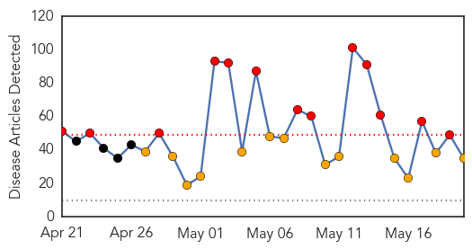
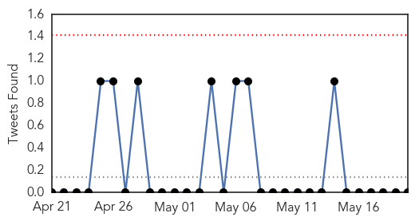
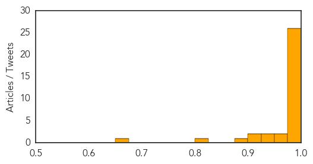
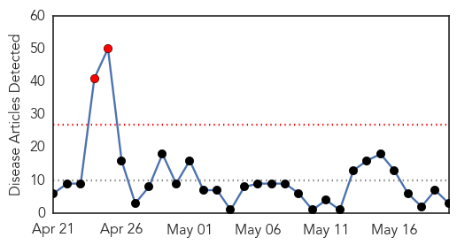
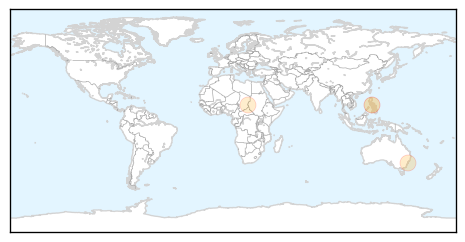
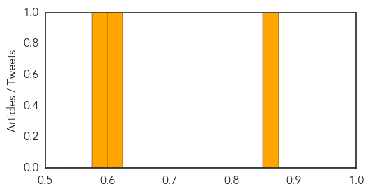

MERS
30-Day Web Trend
13 alerts, 13 warnings

30-Day Twitter Trend
0 alerts, 0 warnings

Article Locations
Article Confidences
Top Articles:
- 1.000
- MERS: Know all about the novel virus
- 1.000
- Kuwait- Seven more with MERS
- 1.000
- Kuwait- Health says 86 samples test negative for MERS
- 1.000
- Nine things you need to know about MERS
- 0.999
- CDC Expert What Illinoisans Need to Know About MERS
- 0.999
- CDC Expert What Hoosiers Need to Know About MERS
- 0.999
- MERS in America: Is spread of virus a worry?
- 0.999
- KSWO, Lawton, OK- Wichita Falls, TX: News, Weather, Sports. ABC, 24/7, Telemundo -
- 0.999
- All You Need To Know About the MERS Virus
- 0.999
- Third U.S. MERS case brings more questions than answers
- 0.999
- Florida MERS patient recovers
- 0.999
- Florida MERS patient recovers
- 0.999
- Opinion: Will MERS become a global threat?
- 0.998
- Third U.S. MERS case brings more questions than answers
- 0.998
- Florida Department of Health continues surveillance after MERS infection
- 0.996
- Kuwait- Antibodies found to 'MERS' virus - Toll hits 105
- 0.996
- Saudi Arabia reports 2 more MERS coronavirus cases
- 0.995
- MERS Cases Put Hospitalists on Alert for Infectious Disease
- 0.995
- Death toll from MERS in Saudi Arabia hits 173
- 0.995
- MERS Patient from Florida Recovered, Released from Hospital
- 0.995
- The Voice of Russia: News, Breaking news, Politics, Economics, Business, Russia, International current events, Expert opinion, podcasts, Video
- 0.995
- CDC Expert: What Illinoisans Need to Know About MERS
- 0.992
- MERS Arrives In The Netherlands, Researchers Identify Drugs That Could Treat The Deadly Virus
- 0.981
- Spread of MERS in Saudi Arabia puts camel owners on defense
- 0.980
- Doctor exposed to MERS in Florida leaves Canada
- 0.979
- Fakeih: Containing MERS ‘top priority’
- 0.974
- West Virginia healthcare professional confident MERS won't hit M
- 0.967
- MERS found in five racing camels in Oman
- 0.939
- Need to determine MERS source
- 0.937
- Screen of existing drugs finds compounds active against MERS coronavirus
- 0.919
- New Mers deaths take Saudi..., SahilOnline News
- 0.904
- Middle East Online
- 0.896
- Anti-MERS trial vaccine raises hopesHealthcare
- 0.803
- Drugs that could help in fight against MERS-coronavirus revealed
- 0.651
- Coronavirus patient discharged at his own riskHealthcare
Top Tweets:
- 0.702
- RT: Infection control and MERS-CoV in health-care workers http://t.co/jh2vdeH1E0
Measles
30-Day Web Trend
2 alerts, 0 warnings

30-Day Twitter Trend
0 alerts, 0 warnings

Article Locations
Article Confidences
Top Articles:
Top Tweets:
-
No tweets found for May 20, 2014